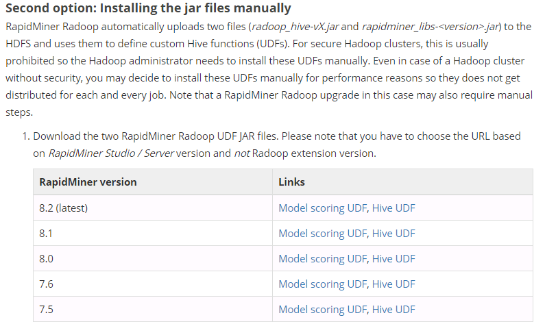
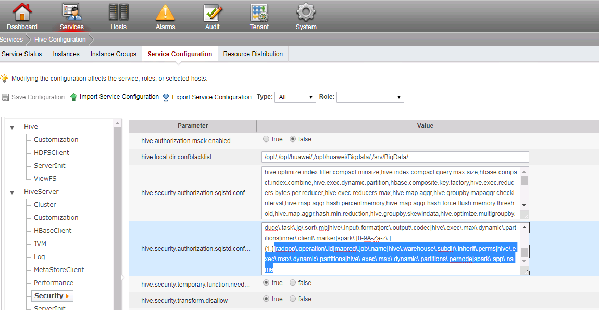

Connection between RapidMiner with FusionInsightHD¶
Succeeded Case¶
Rapidminer Studio 8.2.001 <-> FusionInsight HD V100R002C80SPC200
preparation¶
- Download and install RapidMiner Studio, download site https://rapidminer.com/
- Start rapidminer, on the top of the main menu, choose
Extensions->Marketplace,typeradoop,install it and restart rapidminer - Configure the local host file，file path is
C:\Windows\System32\drivers\etc，add the cluster node ip and host name and save the file. -
Configure Kerberos file
Created a user with "Human-Machine" as its type( For detail, take product documentation as a reference ), grant the Hive, Spark,HDFS privileges to this user. For example, create a user named developuser, download the user.keytab and krb5.conf of the user and save them in your computer.
-
Prepare the FusionInsight client configuration filesystem and jar files
- In the Manager GUI，choose
Service->Download Client->Only Configuration File

- Unzip the file,find the following files,copy them into a directory,like
../config.

- Open
yarn-site.xml,delete the following property:<property> <name>audit.service.name</name> <value>Yarn</value> </property>
- Login to one of the cluster nodes, go to the following path
\FusionInsight_Services_ClientConfig\Spark2x\FusionInsight-Spark2x-2.1.0.tar.gz\spark\jars,download the file directory/jars,save it in your computer,likeC:/jars。
- In the Manager GUI，choose
Configure the cluster¶
-
Bind the UDP port
- Download the UDP port bind tool
uredir,website is https://github.com/troglobit/uredir - After building and installing, we get the executing file
uredir,upload it to the KDC server nodes in the cluster,and run the following command,here IP refers to the node ip../uredir IP:88 IP:21732
- Download the UDP port bind tool
-
Configure Radoop Jars
- Download Radoop jars in this addresshttps://docs.rapidminer.com/latest/radoop/installation/operation-and-maintenance.html,get the correct version。

-
Upload the jar files to each node of the cluster,eg,
/usr/local/lib/radoop/ -
In the HiveServer node of the cluster,uplaod the Radoop jar files to the following path and change their owner and execution authority ``` cd /opt/huawei/Bigdata/FusionInsight_HD_V100R002C80SPC200/install/FusionInsight-Hive-1.3.0/hive-1.3.0/lib chown omm:wheel radoop_hive-v4.jar chown omm:wheel rapidminer_libs-8.2.0.jar chmod 700 radoop_hive-v4.jar chmod 700 rapidminer_libs-8.2.0.jar
cd /opt/huawei/Bigdata/FusionInsight_HD_V100R002C80SPC200/install/FusionInsight-Hadoop-2.7.2/hadoop/share/hadoop/mapreduce/lib chown omm:ficommon radoop_hive-v4.jar chown omm:ficommon rapidminer_libs-8.2.0.jar chmod 750 radoop_hive-v4.jar chmod 750 rapidminer_libs-8.2.0.jar
`` * In the FusionInsight Manager GUI, chooseService->Hive->Service Configuration`add the following configuration - Notice that there should be aradoop\.operation\.id|mapred\.job\.name|hive\.warehouse\.subdir\.inherit\.perms|hive\.exec\.max\.dynamic\.partitions|hive\.exec\.max\.dynamic\.partitions\.pernode|spark\.app\.name
|as seperater -
Save the configuration，restart HiveServer
-
Create Radoop UDF functions
-
Run the following command in the client node, login to the Hive database
source /opt/hadoopclient、bigdata_env kinit developuser beeline
-
create a database in Hive, for example
rapidminer, and create functions,run the following commands in beeline modecreate database rapidminer; use rapidminer; DROP FUNCTION IF EXISTS r3_add_file; DROP FUNCTION IF EXISTS r3_apply_model; DROP FUNCTION IF EXISTS r3_correlation_matrix; DROP FUNCTION IF EXISTS r3_esc; DROP FUNCTION IF EXISTS r3_gaussian_rand; DROP FUNCTION IF EXISTS r3_greatest; DROP FUNCTION IF EXISTS r3_is_eq; DROP FUNCTION IF EXISTS r3_least; DROP FUNCTION IF EXISTS r3_max_index; DROP FUNCTION IF EXISTS r3_nth; DROP FUNCTION IF EXISTS r3_pivot_collect_avg; DROP FUNCTION IF EXISTS r3_pivot_collect_count; DROP FUNCTION IF EXISTS r3_pivot_collect_max; DROP FUNCTION IF EXISTS r3_pivot_collect_min; DROP FUNCTION IF EXISTS r3_pivot_collect_sum; DROP FUNCTION IF EXISTS r3_pivot_createtable; DROP FUNCTION IF EXISTS r3_score_naive_bayes; DROP FUNCTION IF EXISTS r3_sum_collect; DROP FUNCTION IF EXISTS r3_which; DROP FUNCTION IF EXISTS r3_sleep; CREATE FUNCTION r3_add_file AS 'eu.radoop.datahandler.hive.udf.GenericUDFAddFile'; CREATE FUNCTION r3_apply_model AS 'eu.radoop.datahandler.hive.udf.GenericUDTFApplyModel'; CREATE FUNCTION r3_correlation_matrix AS 'eu.radoop.datahandler.hive.udf.GenericUDAFCorrelationMatrix'; CREATE FUNCTION r3_esc AS 'eu.radoop.datahandler.hive.udf.GenericUDFEscapeChars'; CREATE FUNCTION r3_gaussian_rand AS 'eu.radoop.datahandler.hive.udf.GenericUDFGaussianRandom'; CREATE FUNCTION r3_greatest AS 'eu.radoop.datahandler.hive.udf.GenericUDFGreatest'; CREATE FUNCTION r3_is_eq AS 'eu.radoop.datahandler.hive.udf.GenericUDFIsEqual'; CREATE FUNCTION r3_least AS 'eu.radoop.datahandler.hive.udf.GenericUDFLeast'; CREATE FUNCTION r3_max_index AS 'eu.radoop.datahandler.hive.udf.GenericUDFMaxIndex'; CREATE FUNCTION r3_nth AS 'eu.radoop.datahandler.hive.udf.GenericUDFNth'; CREATE FUNCTION r3_pivot_collect_avg AS 'eu.radoop.datahandler.hive.udf.GenericUDAFPivotAvg'; CREATE FUNCTION r3_pivot_collect_count AS 'eu.radoop.datahandler.hive.udf.GenericUDAFPivotCount'; CREATE FUNCTION r3_pivot_collect_max AS 'eu.radoop.datahandler.hive.udf.GenericUDAFPivotMax'; CREATE FUNCTION r3_pivot_collect_min AS 'eu.radoop.datahandler.hive.udf.GenericUDAFPivotMin'; CREATE FUNCTION r3_pivot_collect_sum AS 'eu.radoop.datahandler.hive.udf.GenericUDAFPivotSum'; CREATE FUNCTION r3_pivot_createtable AS 'eu.radoop.datahandler.hive.udf.GenericUDTFCreatePivotTable'; CREATE FUNCTION r3_score_naive_bayes AS 'eu.radoop.datahandler.hive.udf.GenericUDFScoreNaiveBayes'; CREATE FUNCTION r3_sum_collect AS 'eu.radoop.datahandler.hive.udf.GenericUDAFSumCollect'; CREATE FUNCTION r3_which AS 'eu.radoop.datahandler.hive.udf.GenericUDFWhich'; CREATE FUNCTION r3_sleep AS 'eu.radoop.datahandler.hive.udf.GenericUDFSleep';
-
RapidMiner Configuration¶
- In RapidMiner sStadio，choose
Connections->Manage Radoop Connectionsin the top menu. -
choose
New Connections->Import Hadoop Configuration Files,choose the configuration files downloaded from the cluster,clickImport Configuration
-
After the import, click
Next, go to the Connection settings window,configure ad following:- Global：
- Hadoop Version：Other（Hadoop 2X line）
- Additional Libraries Directory: Spark jar files downloaded from the cluster
- Client Principal:
Kerberos user name@HADOOP.com - Keytab File: the keytab file downloaded from manager
- KDC Address: the KDC server IP(see the krb5.conf file)
- REALM: HADOOP.COM
- Kerberos Config File: the krb5 file downloaded from manager

- Hadoop：
-
At the filter in upper right corner, search
split, uncheckmapreduce.input.fileinputformat.split.maxsize
-
Search
classpath,uncheckmapreduce.application.classpath
-
Spark：
- Spark Version：Spark2.1
- Spark Archive(or libs)Path: local:///opt/huawei/Bigdata/FusionInsight_Spark2x_V100R002C80SPC200/install/FusionInsight-Spark2x-2.1.0/spark/jars
- Spark Resource Allocation Policy：Static，Default Configuration
-
Advanced Spark Parameters：add the following two parameters for spark:
park.driver.extraJavaOptionsandspark.executor.extraJavaOptions
-
The value can be found in manager GUI, choose
Services->Spark2X Configuration->type all，searchextraJavaOptionsin the search bar, choose the parameters inSpark2x->SparkResource2x
-
Copy the values into a text file, replace the relative path
./in the value with absolute path in the cluster, like/opt/huawei/Bigdata/FusionInsight_Spark2x_V100R002C80SPC200/1_21_SparkResource2x/etc, then copy the values into rapidminer spark configuration
-
Hive:
- Hive Version: Hive Server2
- Hive Server Address：Hive Server IP
- Hive Port: 21066
- Database Name: the database name created in Hive,here is rapidminer
- Customer database for UDFs: same as before

- click
OK->Proced Anyway->Save
Test the Connection¶
-
Click Configure, in Global tab, click Test，Test Results show as following:

-
In Hadoop tab，click Test,Test Results show as following:

-
In Spark tab,click Test,Test Results show as following:

-
In Hive tab, click Test, Test Results show as following:

-
Click Full test,Test Results show as following:

Radoop Demo¶
-
In RapidMiner Studio main menu,choose
Help->Tutorials->User Hadoop->Rapidminer Radoop- Run the demo accordding to the Tutorials, get the follwing results